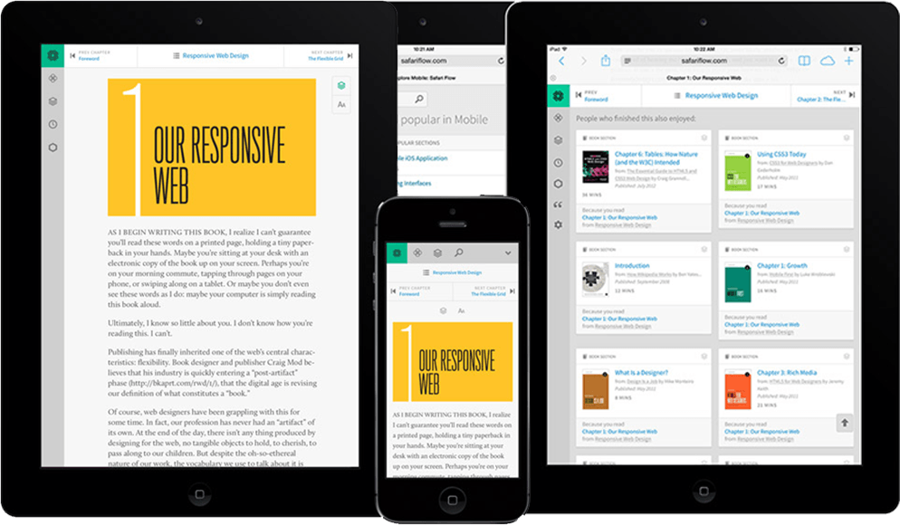

Safari Flow is a subscription-based reading platform. (You can think of it like Netflix for technical books.) If you're look for web-related books, Safari’s library is stocked with the best of tore. In 2013, we were asked to help brand, strategize, and design the product for its Beta release.
Safari Flow is a subscription-based reading platform. (You can think of it like Netflix for technical books.) If you're look for web-related books, Safari’s library is stocked with the best of tore. In 2013, we were asked to help brand, strategize, and design the product for its Beta release. library is stocked with the best of tore. In 2013, we were asked to help brand, strategize, and design the product for its Beta release.
Safari Flow is a subscription-based reading platform. (You can think of it like Netflix for technical books.) If you're look for web-related books, Safari’s library is stocked with the best of tore. In 2013, we were asked to help brand, strategize, and design the product for its Beta release. library is stocked with the best of tore. In 2013, we were asked to help brand, strategize, and design the product for its Beta release.